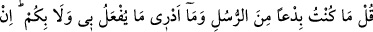
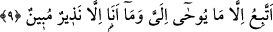

burhanlara rağmen Allah’ın âyetlerini inkâr ettiler. Allah’ın âyetlerinden başka
evliyânın eserlerine nasıl inanırlar ki? Evet Allah Teâlâ’dan özel bir tevfik ve inâyet
olursa o zaman maksûd ve meram hâsıl olur.
Şöyle hikâye edilir: Ebû Süleyman Dârânî (k.s.) hazretlerinden rivâyet edildiğine
göre o şöyle demektedir: Hikâye ve kıssacılardan birinin sohbet meclisine gidip geldim,
anlattığı şeyler beni çok etkiledi. O meclisten kalkınca aklımda hiçbir şey kalmadı.
İkinci kez tekrar gittim, bu sefer yol boyu hep bu anlattıklarından etkilendim. Sonra bu
durum yine kayboldu. Daha sonra üçüncü kez aynı zâtın sohbet meclisine katıldım, artık
o zâtın sözleri gönlümde iz bıraktı ve etkili oldu. Eve döndüm, evde bulunan bir takım
oyun eğlence ve çalgı aletlerini kırdım attım. Bu zâtın anlatmış olduğu yolu tarikat,
tasavvuf, zühd, takva ve sufilik yolunu benimsedim. Ebû Süleyman bu hikâyeyi Şeyh,
ârif, vâiz Yahya b. Muaz er Râzî (k.s.) hazretlerine anlatınca Yahya b. Muaz “bir serçe
kekliği avladı” buyurdular. Serçeden bu kıssacı üstadı, keklikten de Ebû Süleyman
Dârânî’yi kastettiler. İşte vaaz, öğüt ve nasihat kapısı herkese açıktır. Ancak bu hususta
Allah’ın rahmetine mazhar olanlar kabul görürler. En büyük nasihat ve öğüt ise
Kur’ân’ın nasihat ve öğütleridir.
Mollâ Câmî şöyle demiştir:
O ipi tutup ona sarılasın,
Nefs ve hevâ kuyusundan dışarı çıkıp,
Yüce âleme doğru gitmeye azmedesin diye
Hak Teâlâ Kur’ân’ı “ip” olarak isimlendirdi.
9. De ki: Ben peygamberlerin ilki değilim. Bana ve size ne yapılacağını da
bilmem. Ben sadece bana vahyedilene uyarım. Ben sadece apaçık bir uyarıcıyım.
“De ki: “Ben türedi bir elçi,” beşere gönderilen ilk elçi “değilim.” Allah Teâlâ
benden önce de birçok elçiler gönderdi. Bunların hepsi de Allah’ın kullarını Allah’ın
birliğine ve tâate dâvette ittifak ettiler. Ben de onların dâvet ettiklerinden başkasına
dâvet edici değilim. Bilakis ben tevhidde ihlâsa ve kullukta sadâkate dâvet ediyorum.
Ben güzel ahlâkı tamamlamak için gönderildim. Onların güçlerinin yetmediğine ben
de muktedir değilim ki her istediğinizi size getirebileyim ve gaib haberlerden
sorduğunuz her şeyi size haber verebileyim. Zira benden önceki elçiler de ancak
Allah’ın kendilerine verdiği mûcizeleri meydana getirebiliyorlar ve kendilerine vahiyle
bildirilen haberleri kavimlerine bildiriyorlardı. Öyleyse önceki elçilerin çağırdığı şeye
benim sizi çağırmamı nasıl inkâr ediyor ve Allah’ın bana vermediği mûcizeyi benden